New Senior School Biology Practical Activity & Work Book Two
Chapter
2
THE DIGESTIVE SYSTEM AND FEEDING MECHANISMS
Notable Concepts
Feeding mechanisms and digestion
Alimentary canal and food digestion
Absorption of food
Background Information
DIGESTION OF FOOD
Heterotrophs are organisms that cannot make their Hfood from simple inorganic substance, rather they feed on already available organic food substances. The complex nature of the organic materials most of these heterotrophs take requires that before the food can be absorbed and assimilated into their bodies, they need not only be ingested but they must be digested (a catabolic process).
Digestion in an organism (Heterotrophs) depends on its complexity and size. The simple unicellular organisms for instance, carry out intracellular digestion within a food vacuole inside the cell while the multicellular organisms usually carry out extra cellular digestion with the gut.
FEEDING MECHANISMS
Organisms have special structures with which they ingest food substances, digest them before they are absorbed into the organism’s body. These structures which are called feeding mechanisms also vary according to the organism’s size, complexity and type of food it takes in.
Feeding mechanisms, modification and adaptations for some organisms are discussed in the table that follows under: Feeding Adaptation and Modication in Amoeba, paramecium, Hydra, Filter feeders, Fluid feeders, Feeding adaptations and modications in insects, saprophyte and parasitic feeding modifications.
Organisms and feeding modifications / mechanisms and type of digestion
Mechanism of feeding process
Special adaptativestructure / features
1. Amoeba proteus
(intracellular digestion) feeds on diatoms
Feeding is by phagocytosis. Itsurrounds its prey with pseudopods,then forms a food vacuole. Digestive enzymes which is released into this vacuoles breaks down the prey, the food is then absorbed by the cell.
Pseudopods and food vacuole
2. Paramecium (Intra cellular digestion)
Cilia, gullet oral groove and food vacuole
3. Hydra First Extra cellular digestion by digestive enzymes at the gut walls of the endoderm then later intra cellular digestion by amoboid cell in the endoderm.
The cilia sweep food organisms down to the base of the gullet through the oral groove. A food vacuoles is formed at the base of the gullet. The vacuole later moves into the cytoplasm where the food is digested by enzyme and absor-bed into the cytoplasm. Indigested wastes are posed out through the anal pore
Stinging cells, tentacles mouth and gut cavity.
4. Filter feeders among which include: sponge; Bivalves (eg molluscs or oysters) water eas, smaller shes and mos-quito larvae, whales etc.They can feed on plankton digestion is extracelluar
The stinging cells (nematocysts) paralyses a prey then pushes its tentacle. The tentaclecoils round the pray and pushes it through the mouth into the gut cavity. Here it is partially digested by enzymes from digestive juice of the gut wall. Amoboid cell in the endoderm later completes the digestion. Egestion takes place throughthe mouth.
They usually trap thefood in most cases by means of cilia or other structures like movement of its appendages, the animal draws water which contains the food. The water passes through a sieve in front of the gut, the food is ltered off for digestion while the water passes out of the body.
Long pointed beaksin humming bird, long coiled feeding tubes (proboscis) in butterfly.
7. Saprophytic feeding Examples: Rhizopus andmucor. They carry out extracellular digestion
The rhizoids penetrate into the substrate with their tips secreting enzymes like amylases and proteases out of the hyphal wall into the substrate. Digestion takes place and the soluble products of glucose and amino acid diffuse through the hyphal wall into the cytoplasm.
Tapeworm have no alimentary canal, round worms have simple alimentary canal. They use their well adapted mouth parts to feed on food from their hosts.
Like the case of tapeworm there are hooks and suckers.
Feeding in insect
nsects carry out extra cellular digestion e.g. Buttery, Mosquito Cockroach Grasshopper etc.
Different insects have different mechanisms of feeding process and their various mouth parts are adapted for their kinds of foods eg. Piercing and sucking for mosquito, cutting, crushing and grinding in Cockroaches and grasshoppers, sucking for buttery and housey etc.
fig2.1: mouth part of housey
fig2.2: mouth parts of cockroach
fig2.3: mouth part of grasshoppert
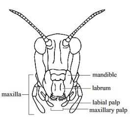
fig2.4: mouth part of mosquito
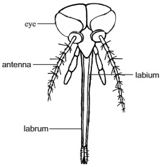
Alimentary canal and digestion of food in mammals
fig2.5: A tooth
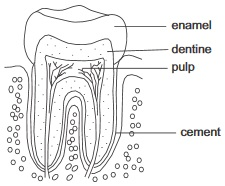
fig2.6: Human dentition
fig2.7: Human digestive system
Digestion, which is the breaking down of complex and large molecule food substances into simpler and smaller ones takes place in mammals in a long tube like structure called Alimentary canal or Gut. Alimentary canal begins at the mouth and ends at the anus. It also consists of the Gullet or oesophagus, stomach, small and large intestines. Different parts of the alimentary canal are modied into specialized organs and structures, which perform specic functions.
Digestion is of two types: Mechanical digestion and Chemical digestion.
In mechanical digestion, food is physically broken down into smaller particles by chewing in the mouth by the teeth and muscular churning by the muscular walls of the alimentary canal. This helps to prepare the food for quick chemical digestion by exposing large amount of food to action of enzymes through increase in surface area of the food particles.
Under chemical digestion, there is a chemical breakdown of complex molecules of food into simpler ones by the action of enzymes.
Various parts of the alimentary canal and their roles in food digestion
The mouth: Mechanical digestion starts at the mouth by the action of the teeth on the food. Several secretions are added to the food.
Mucus secretion from the cells lining the mouth moistens the food
Salivary secretions from the salivary gland, which not only moistens the food but starts off chemical digestion by converting starch to maltose. The tongue also helps to put the food in proper position
The Oesophagus: This carries food from the mouth to the stomach by a process which involves rhythmic muscular action called peristalsis and the lubricated oesophagus lining with mucous which eases food passage.
The Stomach: Food is received into the stomach from the esophagus by the relaxation of the rst sphincter muscle. Three kinds of cells make secretions at the stomach, one secretes mucous, the other enzymes while the third one secretes waterand hydrochloric acid. These three secretions together form gastric juice. The Hcl (hydrochloric acid) helps to break up connection tissue and cell membrane in food, it also kills many harmful bacteria. Pepsin breaks down protein into polypeptide. There is also rennin which cuddles the milk. The chemical digestion in the stomach is aided by the churning action of the second sphincter which moves food out of the stomach.The small intestine: The small intestine is of three parts: The duodenum which is the rst part, the Jejunum which is the second part and the third part called the ileum.
Secretions from the pancreas and gallbladder enter the small intestine at the duodenum. These secretions are pancreatic juice and bile (bile is produced by the liver but stored at the gall bladder) pancreatic juice contains digestive enzymes. Amylopsin which breaks down starch to maltose, lipase which breaks down fats and oil to fatty acids and glyceroland trypsin which breaks down proteins to polypeptides.Bile provides an alkaline medium for enzymes of the pancreatic juice to act; it adds water to the chyme (a thick creamy uid the food forms into in the stomach). It also breaks down fats into tiny droplets (emulsication).
At the illium digestion of carbohydrate, protein fats and oil is completed. Food here is more watery and it is called chyle
Digestion here is by the action of enzymes from the intestinal juice maltose is broken down to glucose by maltase. Erepsinbreaks down polypeptides to amino acids while lipase changes fats and oil to fatty acids and glycerol.
Absorption of digested food
Absorption of glucose, fatty acids and glycerol, amino acids, vitamins and mineral salts take place in the small intestine.The small intestine is well adapted to carry out the function by the presence of the following features
Folds and furrows in the walls of the small intestine which serves to increase its surface area
The presence of small ngerlike projections called villi which further gives it increased surface area.
A rich supply of blood vessels and lymphatic vessels containing blood and lymph
All absorbed food are brought to the liver via the lymphatic portal vein before they are assimilated into the body. the liver can convert, break down, store or leave unchanged the egested through the anus after more water absorption has taken place through the anus after more water absorption has taken place through the anus.
Feeding and digestion in other mammals
fig2.8: Digestive system of a rabbit
Part of the alimentary canal of hen
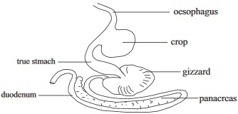
fig2.9: Alimentary canal of earthworm (dorsal view)
fig2.91: Tapeworm (a parasite) showing feeding parts
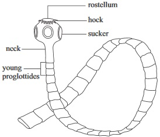
fig2.92: Alimentary canal of grasshopper
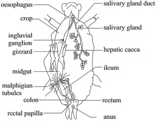
General Questions
1.The organic chemical substances that bring about chemical digestion is called digestive
2.
must take place before a complex food substances like starch can be absorbed into the blood stream.
3.In feeding mechanism, cilia is required in paramecium while pseodopods are needed for
4.In paramecium egestion takes place through the
5.Intracellular digestion occurs in unicellular protists like amoeba while in multicellular animals like earthworm digestion is
6.Peristalsis is a rhythmic muscular action at the alimentary canal while emulsication is a process of
reducing the surface tension of a substance (e.g fats)
increase the surface tension of a substance (e.g fats)
breaking down of protein to amino acid
7. Mechanical digestion takes place in the mouth mostly by the action of the teeth but in the stomach by
activity of enzymes
muscular movment of the stomach
Acidic action in the stomach
8.
is an adaptation for lter feeding , A proboscis also is an adaptation for
9. State the three parts of the small intestine
10.In a hydra,
in the endoderm brings about intracellular digestion after the initial extra cellular digestion on the wall of the gut.
fig2.93:
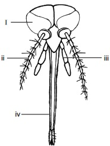
11.Identify the parts labeled (i) (ii) (iii) (iv)
12.Write down two plants that are carnivorous or intectivorous
(i) fern (ii) mosses
(i) Pitcher plant (ii) Venus fly trap
(i) Bryophylum (ii) Lily plant
14.
___________ is an example of a saprophytic micro organism.
Hydra
Fern
Rhizopus
15.The number, kinds and arrangement of teeth in the lower and upper jaw bones of a mammal is called
fig2.94 is The jaw and dentition of a mammal
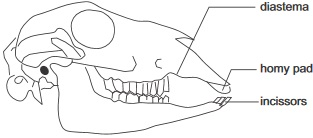
16.a. Is the organism a herbivore or a carnivore?
In g 2.94, the teeth is adapted to (i)
And (ii)
(iii) is it open or closed teeth?
17. A bile is produced by the liver and stored at the
18.Before egestion takes place through the anus, absorption of water occurs at the
19.Pepsin acts in an acid medium while Erepsin acts in an
20.Write two examples of a ruminant
The diagram below shows the alimentary canal of a bird. Label the parts according to their numbers
fig2.95:
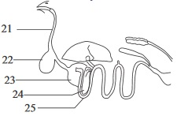
26.What is the function of the gizzard in digestion in birds?
Expression Exercise on Digestive systems and Mechanisms
1.(a) Write five examples of animals that are uid feeder
(b)Write down two adaptive features of carnivorous plants in their mode of feeding
(i) Bright colours (ii) Sugary liquids
Dull colurs (ii) Salty liquids
Green colour (ii) lenght of stem
2.(a) How is the food in the stomach of mammals changed to chyme?
(b)Is there a pH change in medium for food digestion when food enters the deodernum? If so what is the change?
(c) Write down the end product of the following food substances in the table below
Food substance
End product of its digestion
Carbohydrate
Proteins
Fats
3.(a)What is the cause of the difference in length between the alimentary canal of herbivores and that of other mammals
Herbivores have no large intestine
Herbvores feed on plants
The food needs a longer time to digest in herbivores than in other mammals
(b) State three special adaptation of herbivores that enable them to digest cellulose
4.(a)On the diagram below, label the parts that show lacteal and capillary
fig2.96:
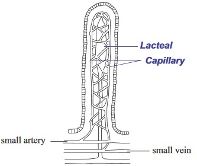
b)Within the table below, summarize activities of the stated digestive enzymes during digestion. (Follow the rst example)
Name of digestive enzyme
Sources of the enzyme
Secretion in which it is present
Function of the enzymes/medium of its operation in food digestion
Ptyalin
Rennin
Pepsin
Amylopsin
Lipase
Maltase
Erepsin
Trypsin
Practical Activities
Activity 1
Observing the alimentary of a small mammal eg. Rat, rabbit or guinea pig
Method /procedure
The student can work in groups with teachers assistance. Each group can examine and carefully observe in turns the dissected alimentary canal of the small mammal.
Identify all the part of the alimentary canal from the mouth to the anus
Compare your observation with the diagrams below
fig2.97:
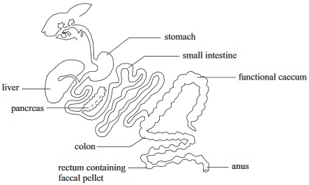
(The teacher will assist the students to remove the small and large intestine and pin them separately along the dissecting board margin)Measure the length of the large and small intestines in centimeters.
Carefully observe the various parts of the small intestine.
Identify the ileum and cut through it
Observe the cut end with hand lens
Questions
(i)Write down the lengths of the intestine observed :
Small
Large
(ii)Compare your observed real alimentary canal of a small mammal and the one drawn on paper.
(iii)Write down your observation when you used a hand lens to see through the ileum
(iv)Write down one other function of the small intestine apart from digestion
(v)Write down two adaptative features that enable small intestine to perform such function.
Activity 2
Examming the alimentary canal of a bird (a pigeon or fowl)
Materials required
Freshly dissected fowl with its alimentary canal exposed
Pen knife;
Hand lens
Method/procedure
(i)Carefully examine various parts of the birds alimentary canal, identifying the positions of the following: The crop, esophagus, gizzard, liver, pancreas, small intestine and anus
(ii)Compare your observations with that of the small mammal alimentary canal in activity 1Write down your observations and comparisons
(iii)What happens to food taken in by the bird when it reaches the gizzard
Draw the diagram of the alimentary canal in your practical note book and compare it with the one in question 21-25
Test of practical work (Alternative to Practical)
fig2.98: A - C
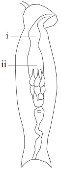
A
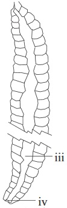
B
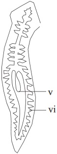
C
a. Identify the diagram specimens above and label the parts indicated with; , ii, iii, iv, v and vi.
b. Compare B and C in relation to their modes of feeding
A
B
1
2
3
fig2.99 A
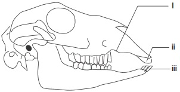
A
B
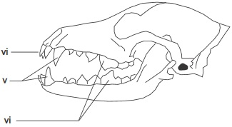
B
a. The diagram specimen shows the jaw bone and teeth of a herbivore and a carnivore. State how their dentitions are well adapted for their feedings
b. Identify the diagram specimens in fig 2.99 A - B by name (without reasons) and label the parts indicated with; , ii, iii, iv, and vi..
3. The diagrams below show the mouth parts of insects
fig2.991: A
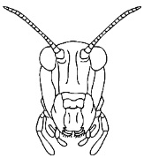
B
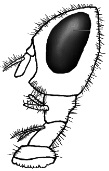
C
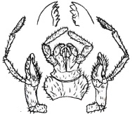
a. What are the mouth parts of B adapted for
b. Which of the mouth parts are adapted for cutting and chewing
c. Write the names of three organisms that their mouth are shown in A, B, C in order of
fig2.992:
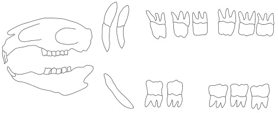
fig2.993:
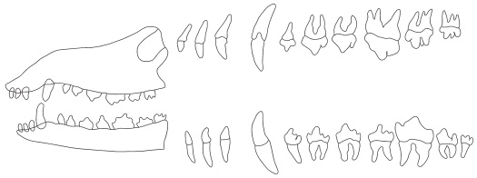
The diagram specimen in gs. 2.992 and 2.993 show the jaw bone and teeth of rabbit and dogs state how their dentition are well adapted for their feeding
Write down the dental formula of each of the organisms under the respective jaw bone shown.
DIGESTIVE SYSTEM SSCE PAST QUESTIONS
JUNE 2000 PART II Qa,b
You are provided with the following specimens: a bird and buttery as specimens G and H respectively
(a) Identify specimens G, and H, without reasons
(b) State one observable feature by which each of specimens G and H obtain their food
(c) State three observable features which each contribute to the survival of specimen G and H